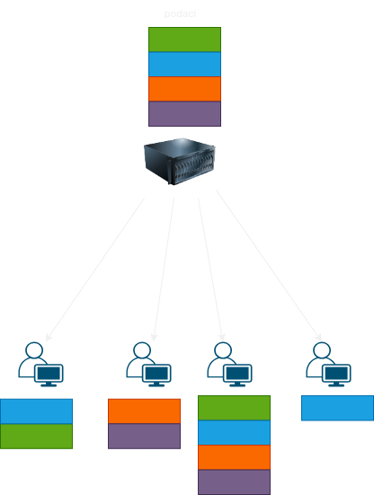
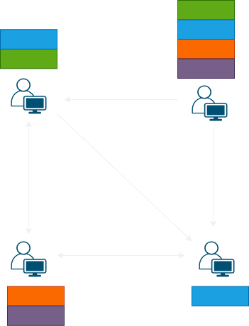
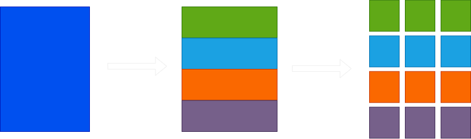
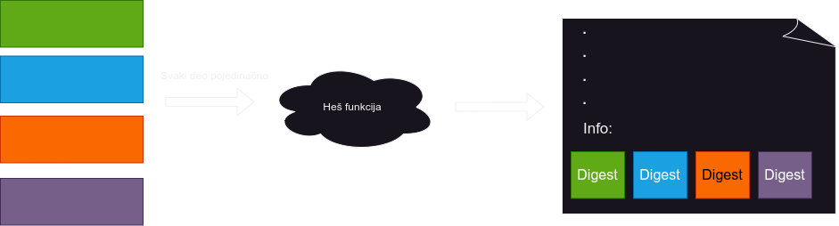

Mane klijent server arhitekture prilikom preuzimanja velike količine podataka
- Propusni opseg servera predstavlja usko grlo
- Maskimalna brzina preuzimanja klijenta zavisi od brzine deljenja servera
- Server je SPoF (ako padne server više niko ne može da preuzima podatke)

Bittorent arhitektura
- Decentralizovan sistem
- Svako ko poseduje neki deo podataka može da ga deli sa ostalima
- Opterećenje propusnog opsega raspoređeno po svim članovima mreže
- Maksimalno iskorišćena brzina preuzimanja, zbog mogućnosti paralelnog preuzimanja sa više izvora

Osnovne komponente i učesnici
Delovi podataka i blokovi (pieces and blocks)
- Podatak se deli na delove (pieces) jednakih duzina (32kB - 16MB)
- Dalje, delovi se dele u blokove (blocks) jednakih duzina
- Blokovi predstavljaju osnovnu jedinicu transfera podataka
- Kada član poseduje čitav deo, tada može da ga deli

Učesnici (peers) mreže
- Seederi - poseduju ceo skup podataka i samo ih dele
- Leecheri - pokušavavaju da preuzmu nedostajuće delove skupa podataka
- Leecheri takođe dele podatke koje poseduju
- Svaki peer održava svoj peer set
Tracker
- Čuva u sebi informaciju o aktivnim članovima mreže (seeder, leecher)
- Članovi mu se obraćaju prilikom pristupa mreži kao i u određenim vremenskim intervalima nakon toga kako bi ih registrovao
- Da li predstavlja SPoF?
Torrent fajl
- Neophodan za deljenje skupova podataka preko Bittorent mreže
- Serijalizuje se u bencoding binarni format
-
Sadrži:
- Announce - URL tracker-a koji se brine o trenutnim članovima mreže
- Created by - naziv i verzija programa kojim je kreiran torrent fajl
- Creation date - datum i vreme kreairanja torrent fajla
- Encoding - encoding koji je korišćen unutar torrent fajla
- Comment - proizvoljan komentar kreatora, može sadržati opis podataka za koje je kreiran torrent fajl
- Info - konkretne informacije o podataku koji se prenosi
Info sekcija torrent fajla
-
Sadrži:
- Naziv podatka
- Dužinu podatka u bajtovima
- Md5 checksum podatka
- Dužinu dela podatka (piece length)
- Listu heš vrednosti svih delova podataka u pravilnom redosledu. Heš se dobija računanjem heš funkcije čiji je ulaz čitav sadržaj jednog dela podatka

Sadrži samo metapodatke!
Konkretan slučaj korišćenja
Koraci
- Kreiranje torent fajla (uTorrent, qBitTorrent)
- Upload torent fajla na javni direktorijum/server
- Preuzimanje torrent fajla i registrovanje kod trackera
- Dobavljanje peer seta
- Razmena podataka (informisanje putem gossip algoritma)
Algoritmi za odabir delova podataka
Rarest first
- Prioretizuje se preuzimanje najređih delova u mreži
- Primenjuje se kada je mreža nedavno uspostavljena ili se pojavio nov izvor podataka
- Prednosti:
- Redukuje se opasnost od gubitka podataka, usled otkaza seedera
- Smanjuje se opterećenje na seederu
- Povećava se brzina preuzimanja
- Omogućava uopšte preuzimanje podataka (kasnije...)
-
Kako članovi znaju koji delovi su retki?
- Have poruke
- Bitfield poruke
Random first
- Član pokušava da preuzme bilo koji deo
- Koriste ga članovi koji su tek ušli u mrežu (imaju manje od 4 dela)
- Omogućava da član započne razmenu podataka
Strict priority polisa
- Moguće preuzimanje više blokova istovremeno
- Prioretizuje se preuzimanje blokova koji pripadaju istom delu
Endgame mode
- Primenjuju ga članovi kojima fali jako malo delova do kompletiranja skupa podataka
- Preuzimanje može biti sporo jer su delovi retki u mreži ili su svi ostali članovi mreže zauzeti
- Član broadcastuje zahteve za delovima
- Čim dobije odgovor od jednog člana, obaveštava ostale članove
- Performanse?
Problemi
- Ne postoji centralni entitet koji bi koordinisao, optimizovao komunikaciju i kažnjavao nepoželjno ponašanje.
- Članovima mreže niko ne brani da samo preuzimaju podatke, bez da ih dele
Osnovni pojmovi
- Free rider - član koji samo preuzima podatke, bez da ih deli
- Choking - jedan član brani drugom da preuzima podatke od njega (A davi B)
- Interes - član želi da preuzima podatke od nekog drugog člana (A je zainteresovan za B)
- Reciprocitet - podstiče se solidarno ponašanje tako što deljenjem podataka članovi stiču mogućnost za preuzimanje podataka
- Da bi se preventovalo opterećenje mreže, na početku svako svakoga davi
-
Kako članovi biraju koje članove će prestati da dave?
- Biraju članove koji imaju veliku brzinu deljenja
- Ovako sebe osiguravaju da će brzo preuzimati podatke
Choke algoritam leechera
-
Regular unchoke
-
Izvršava se:
- Na svakih deset sekundi
- Kada neki član napusti ili uđe u peer set
- Kada neki član postane zainteresovan za trenutnog člana
- Sortira sve zainteresovane članove prema brzini preuzimanja koje nude konkretnom čvoru
- Prestaje da davi prva 3 u soritranoj listi
- U obzir samo dolaze članovi koji su podelili bar jedan blok u poslednjih 30 sekundi
-
Optimistic unchoke
- Izvršava se na svakih 30 sekundi
- Član prestaje da davi nasumičnog člana
- Ako je unchokovan član nezainteresovan, unhockuje dalje dok ne naiđe na zainteresovanog
- Maksimalna penalizacija free ridera, sem mogucnosti da budu optimistički unchokovani
Anti-snubbing
- Primenjuju ga neki torrent klijenti
- Ako svi članovi dave nekog člana, on počne takođe sve da davi
- Na ovaj način povećava broj optimistic unchokova i time šansu da bude unchokovan
Choke algoritam seedera
- Razlozi zašto seederi nastavljaju da dele podatke iako su preuzeli sve podatke su čisto altruističke prirode
- Ipak, zbog ograničenog propusnog opsega ne mogu svima deliti podatke
-
Izvršava se:
- Na svakih deset sekundi
- Kada neki član napusti ili uđe u peer set
- Kada neki član postane zainteresovan za trenutnog člana
- Članovi se sortiraju po vremenu kada su poslednji put unchokovani
-
Prednost imaju oni sa većom brzinom deljenja
- ne sortira se po brzini preuzimanja radi sabotiranja free ridera
- Članovi koji nikad nisu bili unchokovani se sortiraju samo po brzini deljenja
-
20s unchokuje prva 3 u listi i jednog nasumičnog člana
- Pomaže i slabije rangiranim članovima
- narednih 10s ponovo davi nasumično izabranog člana a unchokuje prva 4 u listi